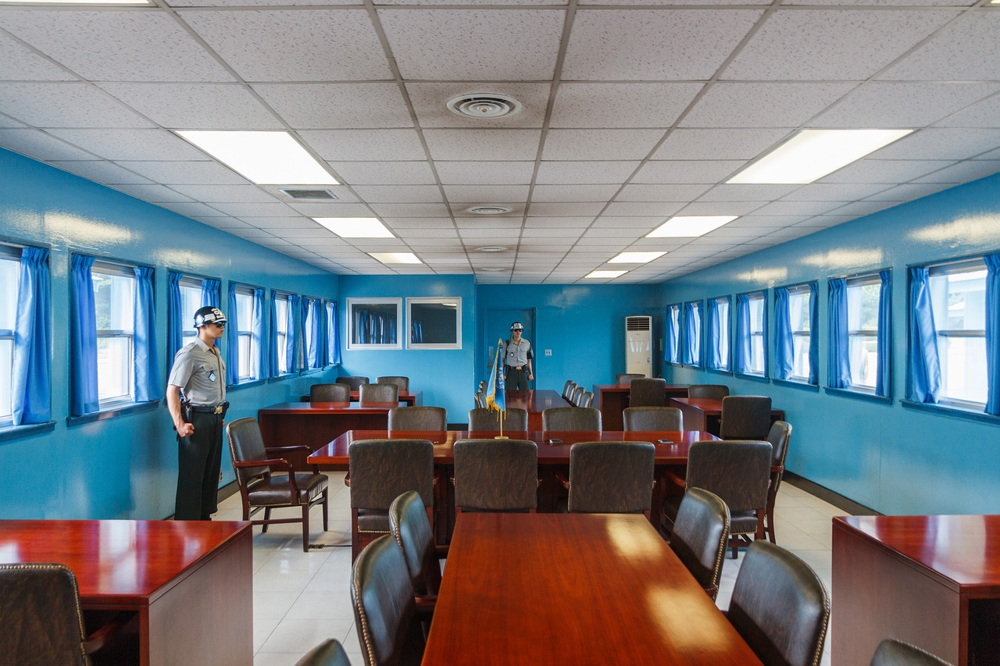
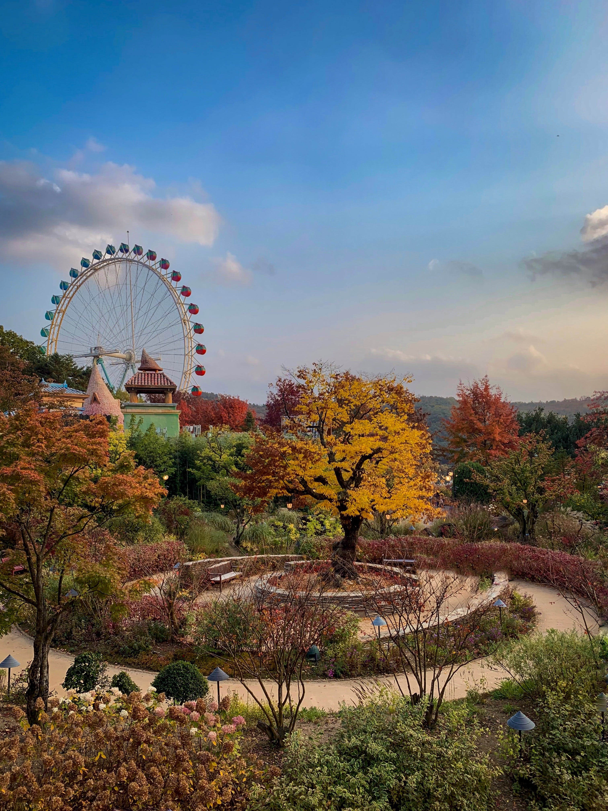

Legnépszerűbb egynapos kirándulások Szöultól
Ha nem elég Szöul, elmehetünk a metróval egy órányira távol Incheonba, ahol a kínai negyedben kóstolhatjuk meg a kínai és a koreai ételek fúzióját. Megnézhetjük az elválasztó vonal mentén fekvő DMZ-t, ahol átláthatunk az északi oldalra. Ha egy kis cukiságra vágyunk, Everland-ban megnézhetjük a koreaiak által imádott panda családot, míg a hullámvasútakon kiüvölthetjük a szívünket. Végül a legnépszerűbb és a legszebb egynapi kirándulás Szöul környékén a Nami sziget meglátogatása vagy a láma parkkal, Gangchon vasúti parkkal, Garden of Morning Calm-mal vagy a Petite France-cel együtt csomagolva.

